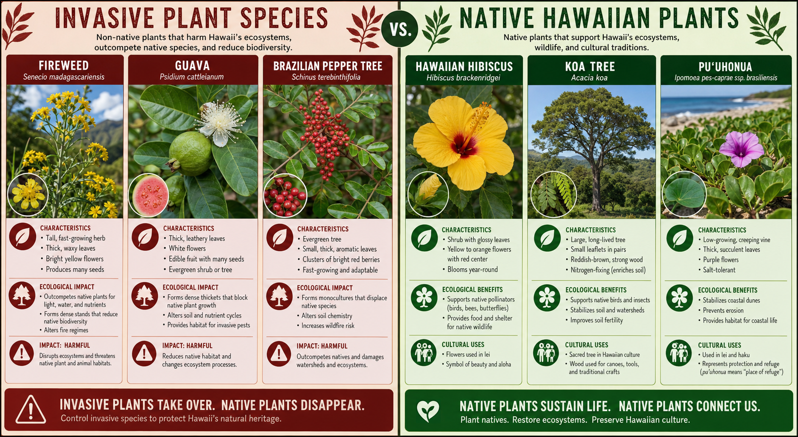

The Invasion Nobody Talks About
Hawaii has more invasive species per square mile than almost anywhere on Earth. And some of the most problematic invasives in Hawaiian ecosystems aren't wild weeds — they're plants that were intentionally introduced as ornamentals, sold in nurseries, and planted in home gardens across the islands for decades.
If your garden contains any of the plants below, we strongly encourage replacing them with native or non-invasive alternatives.
The Most Problematic Invasive Garden Plants
Kahili Ginger (Hedychium gardnerianum)
Ubiquitous across Kauai, Kahili ginger is a beautiful plant — fragrant yellow flowers, dramatic foliage — but it's one of the most destructive invasives on the island. It spreads rapidly by seed and rhizome, forming dense monocultures that crowd out native plants in rainforest understory. Remove it from your property and replace with native gingers (ʻawapuhi kuahiwi).
Strawberry Guava (Psidium cattleianum)
Strawberry guava produces tasty fruit but is classified as a noxious weed in Hawaii. Its seeds are spread widely by birds and feral pigs, and it creates dense thickets that shade out native species. Resist the temptation to plant it.
Clidemia / Koster's Curse (Clidemia hirta)
A sprawling shrub that forms impenetrable thickets in disturbed forest areas. Originally from Central America, it has spread across Kauai's wet forests and is extremely difficult to remove once established. If you see it on your property boundary, remove it immediately before it spreads.
Fountain Grass (Pennisetum setaceum)
Popular in landscaping for its feathery plumes, fountain grass is highly flammable and spreads aggressively in dry and medium-rainfall areas. It's particularly problematic in the context of fire risk and should never be planted in Hawaii.
Better Alternatives
For every invasive plant, there's a native or non-invasive alternative that provides similar aesthetic appeal without the ecological cost. At Hoku Gardens, we maintain a complete list of safe and beautiful alternatives — contact us for recommendations specific to your property's conditions.